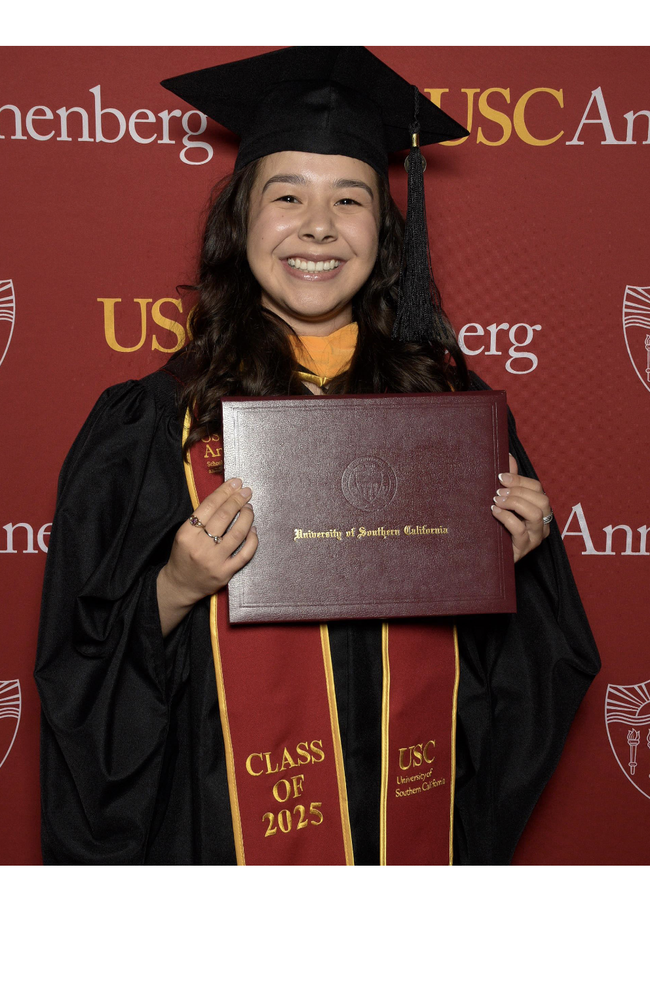
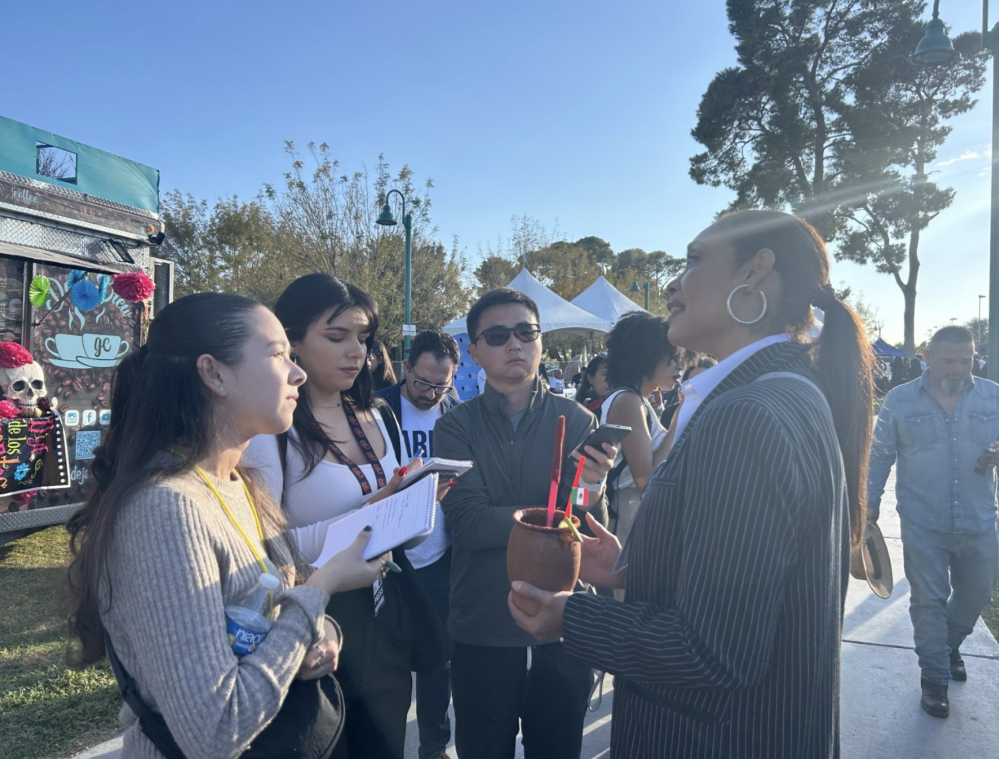

University of La Verne
Earned her Bachelor's degree, where she discovered her passion for journalism through a single class that changed everything.

USC Annenberg Masters
Completed her Master's degree in Journalism at one of the most respected journalism schools in the country, Class of 2025.

Fields of Resistance
Published her most meaningful story examining how immigration enforcement affects undocumented farmworkers across California.